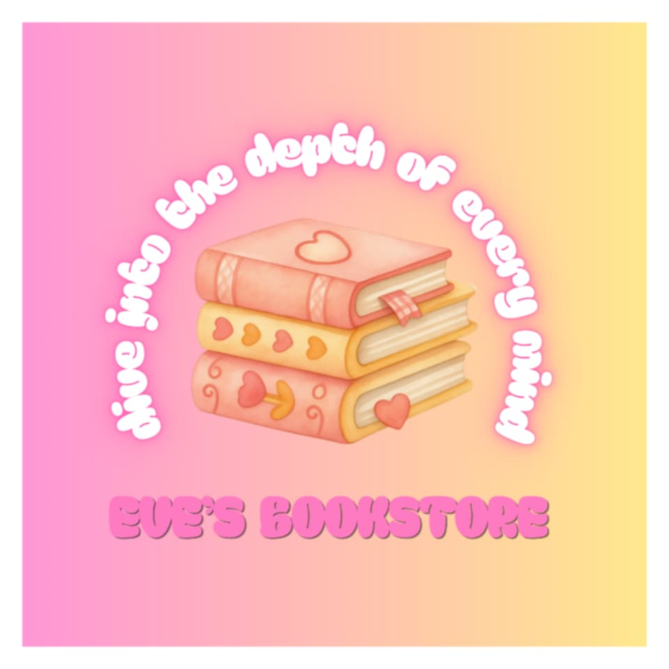

I created this logo because it reflects my personal interest in books and reading. Reading allows me to explore different stories, ideas, and perspectives. One of my dreams is to own a bookstore someday where people can discover and enjoy books just like I do. I want them to experience the feeling of being immersed into books—the feeling of living in the other world and being able to know the depth of each word. Designing this logo helped me imagine what my future bookstore might look like, including designs, themes, and tagline.